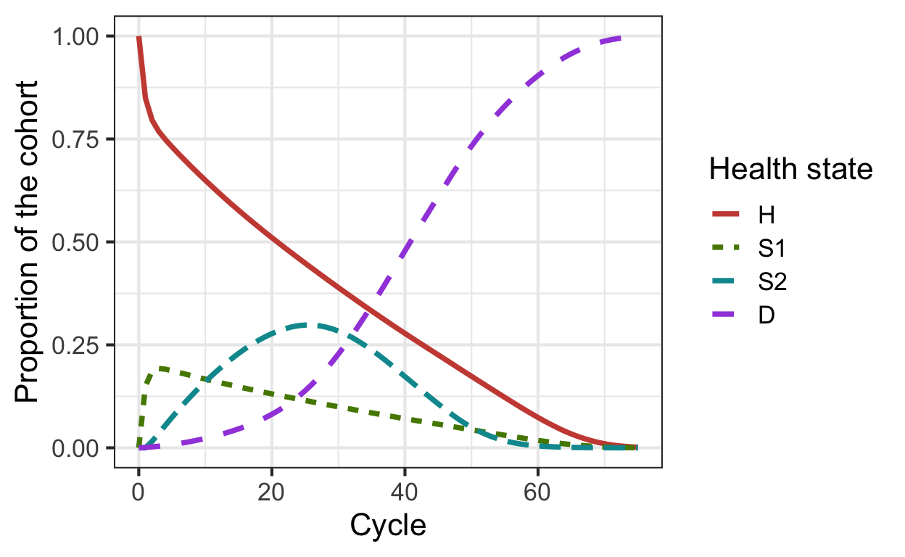

Chapter 2 Decision model
In this second component, we build the backbone of the decision analysis: the implementation of the model. This component is performed by the 02_decision_model.R script. This file itself is not very large. It simply loads some packages and sources the input from component 01 and in addition it runs the decision_model function that is used to caputre the dynamic process of the Sick-Sicker example and stores the output. The output of the model is the traditional cohort trace. The trace describes how the cohort is distributed among the different health states over time and is plotted at the end of this script.
The function decision_model is defined in the 02_decision_model_functions.R file in the R folder. As described in the paper, constructing a model as a function at this stage facilitates subsequent stages of the model development and analysis. This since these processes will all call the same model function, but pass different parameter values and/or calculate different final outcomes based on the model outputs. In the next part, we will describe the code within the function.
## function (l_params_all, err_stop = FALSE, verbose = FALSE)
## {
## with(as.list(l_params_all), {
## if ((n_t + n_age_init) > nrow(v_r_mort_by_age)) {
## stop("Not all the age in the age range have a corresponding mortality rate")
## }
## if ((sum(v_s_init) != 1) | !all(v_s_init >= 0)) {
## stop("vector of initial states (v_s_init) is not valid")
## }
## p_HDage <- 1 - exp(-v_r_mort_by_age[(n_age_init + 1) +
## 0:(n_t - 1)])
## p_S1Dage <- 1 - exp(-v_r_mort_by_age[(n_age_init + 1) +
## 0:(n_t - 1)] * hr_S1)
## p_S2Dage <- 1 - exp(-v_r_mort_by_age[(n_age_init + 1) +
## 0:(n_t - 1)] * hr_S2)
## a_P <- array(0, dim = c(n_states, n_states, n_t), dimnames = list(v_n,
## v_n, 0:(n_t - 1)))
## a_P["H", "H", ] <- (1 - p_HDage) * (1 - p_HS1)
## a_P["H", "S1", ] <- (1 - p_HDage) * p_HS1
## a_P["H", "D", ] <- p_HDage
## a_P["S1", "H", ] <- (1 - p_S1Dage) * p_S1H
## a_P["S1", "S1", ] <- (1 - p_S1Dage) * (1 - (p_S1S2 +
## p_S1H))
## a_P["S1", "S2", ] <- (1 - p_S1Dage) * p_S1S2
## a_P["S1", "D", ] <- p_S1Dage
## a_P["S2", "S2", ] <- 1 - p_S2Dage
## a_P["S2", "D", ] <- p_S2Dage
## a_P["D", "D", ] <- 1
## check_transition_probability(a_P, err_stop = err_stop,
## verbose = verbose)
## check_sum_of_transition_array(a_P, n_states, n_t, err_stop = err_stop,
## verbose = verbose)
## m_M <- matrix(0, nrow = (n_t + 1), ncol = n_states, dimnames = list(0:n_t,
## v_n))
## m_M[1, ] <- v_s_init
## for (t in 1:n_t) {
## m_M[t + 1, ] <- m_M[t, ] %*% a_P[, , t]
## }
## return(list(a_P = a_P, m_M = m_M))
## })
## }
## <bytecode: 0x10e2376a8>
## <environment: namespace:darthpack>The decision_model function is informed by the argument l_params_all. Via this argument we give the function a list with all parameters of the decision model. For the Sick-Sicker model, these parameters are stored in the list l_params_all, which we passed into the function as shown below.
This function itself has all the mathematical equations of the decision models coded inside. It starts by calculating the age-specific transition probabilities from all non-dead states based on the vector of age-specific mortality rates v_r_mort_by_age. These parameters will become vectors of length n_t, describing the probability to die for all ages from all non-dead states.
The next part of the function, creates an array that stores age-specific transition probability matrices in each of the third dimension. The transition probability matrix is a core component of a state-transition cohort model (Iskandar 2018). This matrix contains the probabilities of transitioning from the current health state, indicated by the rows, to the other health states, specified by the columns. Since we have age-specific transition probabilities, the transition probability matrix is different each cycle. These probabilities are only depending on the age of the cohort, and not on other events; therefore, we can generate all matrices at the start of the model. This results in n_t different age-specific matrices that are stored in an array, called a_P, of dimensions n_states x n_states x n_t. After initializing the array, it is filled with the transition probability stored in the list. When running the model, we can index the correct transition probability matrix corresponding with the current age of the cohort. We then added some sanity checks to make sure that the transition matrices and the transition probabilities are valid. The first three and last cycles of the transition probability matrices stored in the array a.P are shown below.
## , , 0
##
## H S1 S2 D
## H 0.8491385 0.1498480 0.0000000 0.001013486
## S1 0.4984813 0.3938002 0.1046811 0.003037378
## S2 0.0000000 0.0000000 0.9899112 0.010088764
## D 0.0000000 0.0000000 0.0000000 1.000000000
##
## , , 1
##
## H S1 S2 D
## H 0.8491513 0.1498502 0.0000000 0.0009985012
## S1 0.4985037 0.3938180 0.1046858 0.0029925135
## S2 0.0000000 0.0000000 0.9900597 0.0099402657
## D 0.0000000 0.0000000 0.0000000 1.0000000000
##
## , , 2
##
## H S1 S2 D
## H 0.8490910 0.1498396 0.0000000 0.001069428
## S1 0.4983976 0.3937341 0.1046635 0.003204853
## S2 0.0000000 0.0000000 0.9893570 0.010642959
## D 0.0000000 0.0000000 0.0000000 1.000000000## H S1 S2 D
## H 0.6055199 0.1068564 0.00000000 0.2876237
## S1 0.1807584 0.1427991 0.03795926 0.6384833
## S2 0.0000000 0.0000000 0.03365849 0.9663415
## D 0.0000000 0.0000000 0.00000000 1.0000000By comparing these probability matrices, we observe an increase in the probabilities of transitioning to death from all health states.
After the array is filled, the cohort trace matrix, m_M, of dimensions n_t x n_states is initialized. This matrix will store the state occupation at each point in time. The first row of the matrix is informed by the initial state vector v_s_init. For the remaining points in time, we iteratively multiply the cohort trace with the age-specific transition probability matrix corresponding to the specific cycle obtained by indexing the array a_P appropriately. All the outputs and relevant elements of the decision model are stored in a list, called l_out_stm. This list contains the array of the transition probability matrix for all cycles t and the cohort trace m_M.
## H S1 S2 D
## 0 1.0000000 0.0000000 0.00000000 0.000000000
## 1 0.8491385 0.1498480 0.00000000 0.001013486
## 2 0.7957468 0.1862564 0.01568695 0.002309774
## 3 0.7684912 0.1925699 0.03501425 0.003924648
## 4 0.7484793 0.1909659 0.05478971 0.005765035
## 5 0.7306193 0.1873106 0.07413838 0.007931783## H S1 S2 D
## 70 0.009928317 0.0022433565 2.035951e-04 0.9876247
## 71 0.007153415 0.0015935925 1.311619e-04 0.9911218
## 72 0.005058845 0.0011174473 8.674540e-05 0.9937370
## 73 0.003460336 0.0007552206 5.436484e-05 0.9957301
## 74 0.002289594 0.0004937081 3.298632e-05 0.9971837
## 75 0.001475636 0.0003151589 1.985106e-05 0.9981894Using the code below, we can graphically show the model dynamics by plotting the cohort trace. Figure 2.1 shows the distribution of the cohort among the different health states at each time point.

Figure 2.1: Cohort trace of the Sick-Sicker cohort model